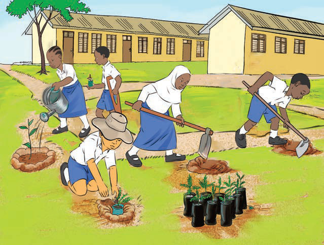

I plant trees and flowers in my environment
I care for my environment by planting trees and flowers.
Activity 6
Walk around the school compound and identify the different actions taken to care for the environment cared for.
Observe or listen to the descriptions of the pictures, then answer the questions that follow.

(a)
Children in a school yard plant young trees. Some dig holes, one waters a plant, and another puts a seedling in the soil.